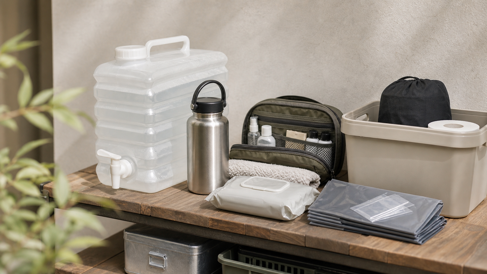

Water and toilet
水より先に困ることもある。トイレと衛生の備え方
断水時は飲み水だけでなく、トイレ、手洗い、食器の片付けも問題になります。 アウトドア用品と防災用品を組み合わせて、使う順番で備えておきます。

飲料水と生活水を同じ場所にまとめない
飲料水は清潔に保管し、生活水はウォータータンクや給水袋で扱うと管理しやすくなります。 キャンプ用のタンクは注ぎ口が使いやすいもの、満水時に倒れにくいものを選びます。
携帯トイレは“数”と“置き場所”が大事
携帯トイレは買って終わりではなく、家族がすぐ使える場所に置くことが重要です。 防臭袋、トイレットペーパー、ウェットシートを同じ袋にまとめると、停電時にも迷いにくくなります。
衛生用品はアウトドアの知恵が使える
水を節約したい時は、ウェットシート、ドライシャンプー、アルコールジェル、使い捨て手袋が役立ちます。 普段のキャンプや車中泊で使っておくと、非常時にも扱い方で迷いません。